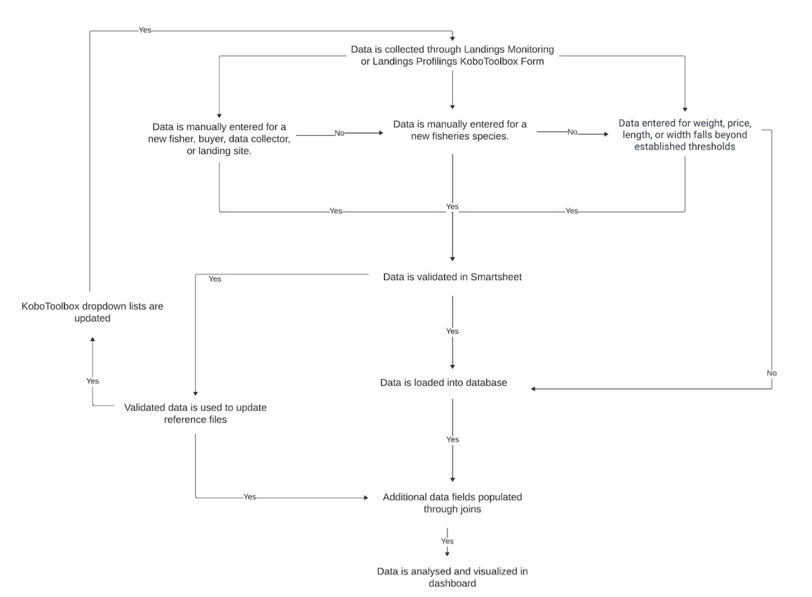
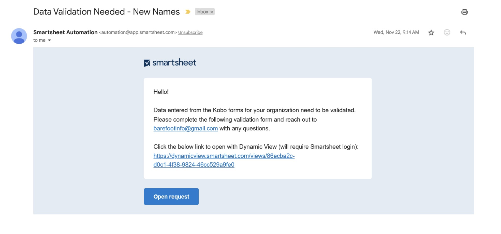
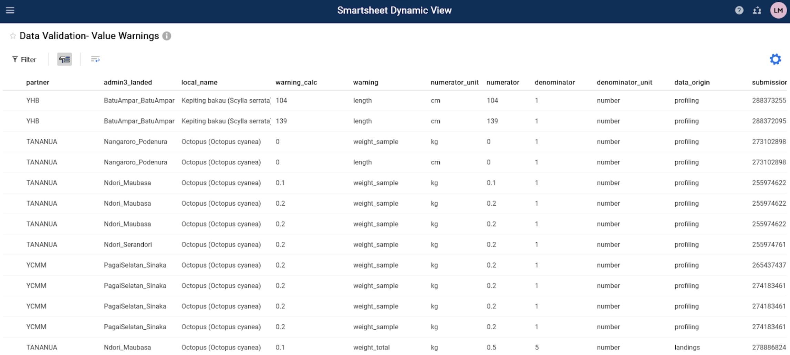
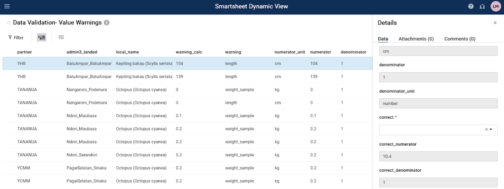
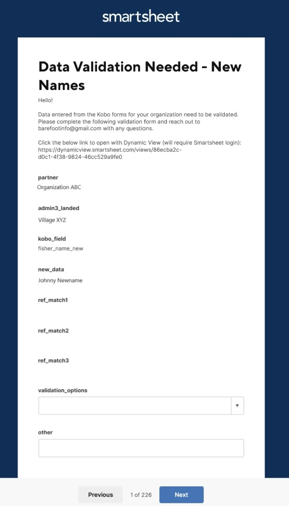
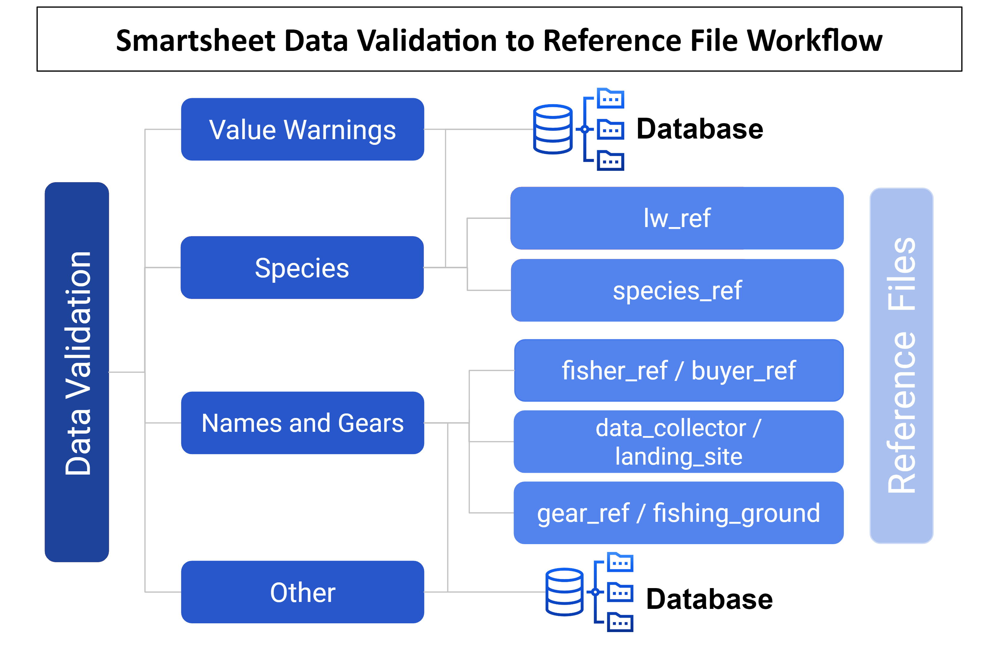

Fanamarinana angona
Torolalana Fanamarinana Ny antotan’isa Momba Ny Jono
Ny antotan’isa rehetra izay mikoriana amin’ny alalan’ny rafitra antotan’isa momba ny jono dia voamarina ao amin’ny Smartsheet. Ny antotan’isa dia alefa ho fanamarinana amin’ny tranga telo; 1) ny anarana vaovao na ny fampahalalana ‘hafa’ dia ampiana tanana ao Amin’ny Kobo Collect, 2) ny sanda nomerika mihoatra ny fetra napetraka na 3) ny anarana ao amin’ny angon-drakitra dia tsy misy mifanaraka amin’izany ao anaty rakitra referansa. Raha vao voamarina ny antotan’isa, dia havaozina ny ao amin’ny tahiry sy ny tabilao fanovozan-kevitra. Ny tabilao referansa dia miasa ho toy ny fidirana ho an’ny “list dropdown” amin’ny endrika KoboToolbox ary misy angona izay ampiana amin’ny antotan’isa amin’ny alàlan’ny fidirana. Jereo ny hazo fanapahan-kevitra etsy ambany (Sary 1).
Ny antontan’isa nateraky ny fanamarinana dia alefa any amin’ny iray amin’ireo tabilao efatra: 1) Anarana sy Fitaovana, 2) Fampitandremana Ny Sanda, 3) Karazana na 4) Hafa. Ny toromarika etsy ambany dia mamaritra ny fizotry ny fanamarinana ny antotan’isa ao amin’ny Smartsheet Dynamic View ho an’ireo tabilao fanamarinana efatra. Ny tabilao fanamarinana tsirairay dia mitaky ny fisafidianana ny sanda marina avy amin’ny “list dropdown” na ny fampidirana ny sanda marina amin’ny tanana. Ho ampiana ny dingana ho an’ny filàna fanamarinana antotan’isa amin’ny ho avy, araka ny takiana.
Ny tabilao fanamarinana’ Names and Gears ’ dia ahitana antotan’isa vaovao avy amin’ny fanadihadiana Kobo rehetra, anisan’izany ny anarana vaovao an’ny mpanjono, mpividy, mpanangona antotan’isa, toeram-panjonoana, toerana fiantsonana ary fitaovana. Ny “fampitandremana momba ny sanda” dia ahitana fampahalalana isa nangonina avy amin’ny Fanadihadiana Momba ny Fanaraha-maso ny fiantsonana na ny Famaritana ny fiantsonana izay nanamarika ny vidiny, ny lanjany na ny halavany mifototra amin’ny fetra efa napetraka mialoha. Ny fetra efa napetraka mialoha ho an’ny fampitandremana ny lanjany sy ny halavany dia avy amin’ny lw_ref; ary ny fampitandremana ny vidiny dia avy amin’ny min_max_ref. Ny tabilao fanamarinana ‘Karazana’ dia ahitana sary sy anarana vaovao avy amin’ny fanadihadiana rehetra mba hanamarinana ireo karazana vaovao amin’ny fampiasana dingana fanamarinana roa. Farany, ny tabilao fanamarinana antotan’isa’ Hafa ‘dia misy fampahalalana’ hafa ’ nangonina avy amin’ny Fanaraha-maso fiantsonana, famaritana fiantsonana, famaritana ny vondrom-piaraha-monina na fanadihadiana isan-tokantragno ary voamarina indrindra ho an’ny tanjona fandikan-teny.
Ny hafatra mailaka isan’andro dia alefa miaraka amin’ny fampahalalana sy rohy mikasika ny fomba hamitana ny fanamarinana ny angona (jereo ny torolàlana amin’ny antsipiriany etsy ambany). Ny fampandrenesana fanampiny avy amin’ny Smartsheet dia azo alefa amin’ny alàlan’ny mailaka hanarahana ny fisafidianana fanamarinana antotan’isa tsy feno, raha ilaina.
Dingana 1: Omeo toerana hifandraisana, anarana ary adiresy mailaka ho an’ireo tompon’andraikitra amin’ny fanamarinana angon-drakitra.
Ny fikambanana mitantana mpiara-miombon’antoka maro dia afaka manome ireo fampahalalana ny mpanamarina antontan’isa rehetra.
Ny mpiara-miombon’antoka tsirairay dia afaka manome fampahalalana momba ny mpanamarina.
Ireo mpanamarina dia hahazo fampandrenesana fanamarinana antotan’isa amin’ny alàlan’ny mailaka.
Dingana 2: Jereo ny mailakao raha misy fangatahana fanamarinana antotan’isa.
Hahazo mailaka avy amin’ny “Smartsheet Automation” ianao (Sary 2)
Ny mailaka dia ahitana hafatra misy rohy hanohizana ny fanamarinana amin’ny alalan’ny “Dynamic view” na “Open request”. Dynamic View dia miendrika tabilao ary Ny Open request dia hitarika anao amin’ny endrika fanamarinana.
Raha hisokatra amin’ny ” Dynamic View “(Dingana 3, Safidy A), tsindrio ny rohy izay manomboka amin’ny”https://dynamicview.smarthseet.com….”
Raha hanokatra ny endrika fangatahana fanavaozana (Dingana 3, Safidy B), tsindrio ny bokotra manga “open request”
Ny fijerena mialoha ireo fidirana mila hamarinina dia hiseho eo ambanin’ity hafatra ity, saingy tsy ho azonao atao ny manamarina ny angona mivantana amin’ny mailaka
Eo amin’ny farany ambany amin’ny mailaka, misy rohy mankany amin’ny “Go to the sheet”; na izany aza, voafetra ny fidirana amin’ny takelaka fototra. Azafady mba avereno jerena ny fanamarinana ny angon-drakitrao Amin’ny alàlan’ny dynamic view, Open request, na ny tatitra manokana momba ny mpiara-miasa aminao (ho avy tsy ho ela).
Sary 1: hazo fanapahan-kevitra momba ny Fanamarinana Ny antotan’isa.

Sary 2: Santionany Smartsheet Fanamarinana Mailaka Hafatra

Dingana 3, Safidy A: Fenoy Ny fanamarinana ny antotan’isanao Amin’ny Alàlan’ny Dynamic View(recommended)
Ho an’ity safidy ity dia mila mamorona kaonty Smartsheet maimaim-poana ianao. Hotarihina avy amin’ny mailaka ianao hanangana kaonty.
Tsindrio ny Rohy Dynamic View ao amin’ny fangatahana mailaka.
Hisokatra ny efitra vaovao ao amin’ny “navigateur internet” miaraka amin’ny tabilao ho an’ny fidirana rehetra. Eto ianao dia afaka mamakivaky mora foana ireo fidirana rehetra mila fanamarinana.
Tsindrio ny laharana hanombohana ny fanamarinana.
Hiseho eo ankavanana ny tontonana” Details”.
Avereno jerena ny sehatry ny toe-javatra ary fenoy ny fanamarinana. Ny saha fanamarinana dia ahitana ny antotan’isa izay hafindra any amin’ny angon-drakitra farany (Tabilao 1).
Mametraha fanehoan-kevitra (fanamarihana), RAHA misy zavatra mila jerentsika akaiky. Ny mpiasan’ny Blue Ventures (BV) dia handinika ny fanehoan-kevitra ary hamaly araka ny tokony ho izy.
Tsindrio ny bokotra manga “Save” raha hitahiry ny safidinao.
Raha vantany vao voamarina dia hanjavona amin’ny “Dynamic View” io laharana io.
Tsindrio ny laharana manaraka ary avereno ny dingana hamenoana ny fanamarinana ho an’ny fidirana rehetra.
Azonao atao ny mivoaka sy miditra indray amin’ny fipihana ny rohy dynamic view avy amin’ny mailakao na miditra ao amin’ny kaontinao amin’ny fotoana rehetra. Tsy mila manamarina ny fidirana rehetra ao anatin’ny fotoana iray ianao.
Azonao atao ny manisy tsoratadidy ity rohy ity ary miverina amin’ny fotoana rehetra.
Tabilao 1: saha Na tsanganana Voalohany ao amin’ny tabilao fanamarinana. Manome vaovao ilaina hanamarinana ny antotan’isa ny sehatry ny toe-javatra. Ny saha fanamarinana dia feno antotan’isa izay hafindra any amin’ny antotan’isa fototra. Ny saha fanamarinana ihany no azo ovaina. Ny saha sasany dia tsy hita afa-tsy amin’ny tontonana “Details” rehefa tsindrio ny laharana iray ao amin’ny tabilao “dynamic view”.
| Tabilao fanamarinana | Famaritana ny saha | Karazana saha |
|---|---|---|
| All Data Validation Tables | ||
| partner | anaran’ny fikambanana manangona ny antotan’isa | teny manodidina |
| admin3_landed | Tanàna na zana-tanàna izay nandefasana sy nandraketana ny vokatra | teny manodidina |
| data_collector | Anaran’ny olona nanangona ny antotan’isa Tao Amin’ny kobo (enumerator) | teny manodidina |
| Names and Gears | ||
| kobo_field | Ny saha avy amin’ny endrika kobocollect izay mila hamarinina na anarana izay tsy mifanaraka amin’ny rakitra referansa. | teny manodidina |
| new_data | Ny sanda nampidirina ho an’ny kobo_field mifanaraka amin’izany | teny manodidina |
| ref_match1 | Anarana mifanandrify akaiky izay efa misy ao amin’ny tahiry. Raha banga, tsy misy anarana efa misy mifanaraka amin’ny anarana ao amin’ny tsanganana “new_data” | teny manodidina |
| ref_match2 | Anarana mifanandrify akaiky izay efa misy ao amin’ny tahiry. Raha banga, tsy misy anarana efa misy mifanaraka amin’ny anarana ao amin’ny tsanganana “new_data” | teny manodidina |
| ref_match3 | Anarana mifanandrify akaiky izay efa misy ao amin’ny tahiry. Raha banga, tsy misy anarana efa misy mifanaraka amin’ny anarana ao amin’ny tsanganana “new_data” | teny manodidina |
| validation_options | Safidio ny saha misy antotan’isa marina (new_data, ref_match1, ref_match2, ref_match3), ampidiro sanda hafa (hafa), na esory (esory ny laharana amin’ny famakafakana satria tsy azo hamarinina ny angona). Ilaina. Hita ao amin’ny tontonana Details Ihany. Hanjavona ny fidirana raha vao voamarina ny angona. | fanamarinana |
| other | Ampidiro sanda hafa raha tsy misy marina ny safidy fanamarinana. Ilaina io raha” other ” no voafantina avy amin’ny validation_options. Hita ao amin’ny tontonana Details Ihany. | fanamarinana |
| landings_submission_ids | Lisitry ny id fandefasana ity sanda vaovao ity dia hita ao amin’ny, avy amin’ny endrika kobo fanaraha-Maso ny fiantsonana | teny manodidina |
| profiling_submission_ids | Lisitry ny id fandefasana ity sanda vaovao ity dia hita ao amin’ny, avy amin’ny kobo form fanaraha-maso mombamomba ny fiantsonana | teny manodidina |
| hhs_submission_ids | Lisitry ny id fandefasana ity sanda vaovao ity dia hita ao amin’ny, avy amin’ny endrika kobo fanadihadiana tokantrano. | teny manodidina |
| species_group | Ny vondrona karazana mifandray amin’ny anarana vaovao, araka ny nangonina tao amin’ny endrika kobo. Hiseho izany raha toa ka sokajy fitaovana ny” kobo_field”. | teny manodidina |
| gear_type | Ilaina RAHA manamarina ny anaran’ny fitaovana vaovao. Lisitry ny karazana fitaovana azo ampifandraisina amin’ny anarana fitaovana voamarina. | fanamarinana |
| fisher_gender | Ny maha lahy sy ny maha vavy mifandray amin’ny mpanjono vaovao, araka ny nangonina tao amin’ny endrika Kobo. Tsy hiseho izany raha tsy anarana mpanjono ny ao amin’ny ” kobo_field”. | teny manodidina |
| buyer_gender | Ny maha lahy sy ny maha vavy mifandray amin’ny mpividy vaovao, araka ny nangonina tao amin’ny endrika Kobo. Hiseho izany raha toa ka anaran’ny mpividy ny amin’ny ” kobo_field”. | teny manodidina |
| Value Warnings | ||
| fisher_name | Anaran’i mpanjono izay nahazo ny vokatra | teny manodidina |
| date_landed | Daty nahatongavan’ny vokatra | teny manodidina |
| local_name | Karazana anaran’ny vokatra eo an toerana | teny manodidina |
| warning_calc | Sandan’ny singa: lanja/tsirairay, vidiny / lanja, halavany/tsirairay, sakany / tsirairay | teny manodidina |
| warning | Karazana fampitandremana | teny manodidina |
| numerator | Sandan’ny mpizara izay tandremana: lanja, vidiny, halavany | teny manodidina |
| numerator_unit | Fatran’ny mpizara: kg, g, lb, ons, USD, IDR, PHP, cm | teny manodidina |
| denominator | Sandan’ny zaraina: manisa, lanja | teny manodidina |
| denominator_unit | Fatran’ny zaraina: isa, kg, g, lb, ons | teny manodidina |
| correct | Y = marina ny sanda, n=diso ny sanda, Remove = esory amin’ny famakafakana satria tsy azo hamarinina ny sanda. Ilaina. | fanamarinana |
| correct_numerator | Raha marina = Y, ny sanda dia miseho ho azy, raha marina = N, ampidiro ny sanda marina | fanamarinana |
| correct_denominator | Raha marina = Y, ny sanda dia miseho hoazy, raha marina = N, ampidiro ny sanda marina | fanamarinana |
| correct_numerator_unit | Raha diso ny fatran’ny mpizara dia safidio ny safidy marina avy amin’ny dropdown | fanamarinana |
| data_origin | Angona izay nihavian’ny antotan’isa (Fanaraha-maso fiantsonaan na mombamomba ny fiantsonana). | teny manodidina |
| submission_id | Id fandefasana avy amin’ny endrika Kobo. Ampiasao izany mba hampitahana amin’ny antotan’isa tsy voadio, raha ilaina, ho hanamarinana. | teny manodidina |
| Species | ||
| data_origin | Fiandohana na loharanon’ny antotan’isa: ‘landings’, ‘profiling’, ‘community_profiling’ na ‘hhs’ | teny manodidina |
| admin1 | Admin1 izay niantsonan’ny vokatra sy nandraketina an-tsoratra. | teny manodidina |
| admin2 | Admin2 izay niantsonan’ny vokatra sy nandraketina azy. | teny manodidina |
| fisher_name | Anaran’i fisher mifandray amin’ity antotan’isa vaovao ity. | teny manodidina |
| new_species_photo | Rohy mankany amin’ny sary izay natolotra Tao Amin’ny Kobo Collect | teny manodidina |
| new_data | Ny sanda nampidirina ho anarana vaovao eo An-toerana ao Amin’ny Kobo Collect Na anarana eo an-toerana SY anarana siantifika id (localname_scientificspecies) izay tsy mifanaraka amin’ny anarana hita ao amin’ny species_ref intsony | teny manodidina |
| ref_match1 | Anarana mifanandrify akaiky izay efa misy ao amin’ny tahiry. Raha banga, tsy misy anarana efa misy mifanaraka amin’ny anarana ao amin’ny tsanganana “new_data” | teny manodidina |
| ref_match2 | Anarana mifanandrify akaiky izay efa misy ao amin’ny tahiry. Raha banga, tsy misy anarana efa misy mifanaraka amin’ny anarana ao amin’ny tsanganana “new_data” | teny manodidina |
| ref_match3 | Anarana mifanandrify akaiky izay efa misy ao amin’ny tahiry. Raha banga, tsy misy anarana efa misy mifanaraka amin’ny anarana ao amin’ny tsanganana “new_data” | teny manodidina |
| eng_common_name_new | Anarana iombonana amin’ny teny anglisy amin’ny karazana vaovao. Azafady mba omeo raha fantatra, raha tsy izany dia avelao ho banga. (Tsy ilaina) | fanamarinana |
| scientific_family_new | Anaran’ny fianakaviana siantifika amin’ny karazana vaovao. Azafady mba omeo raha fantatra, raha tsy izany dia avelao ho banga. (Tsy ilaina) | fanamarinana |
| scientific_species_new | Anaran’ny karazana siantifika amin’ny karazana vaovao. Azafady mba omeo raha fantatra, raha tsy izany dia avelao ho banga. Ilaina: raha tsy fantatra ny anaran’ny karazana dia apetraho azafady ny haavon’ny famantarana taxonomika (ohatra ny anaran’ny Fianakaviana ,anarana mahazatra anglisy) | fanamarinana |
| submission_id | Id fandefasana avy amin’ny endrika Kobo. Ampiasao izany mba hampitahana amin’ny antotan’isa tsy voadio, raha ilaina, ho hamarinina. | teny manodidina |
| validation_options | Safidio ny saha misy antotan’isa marina (local_name_new, ref_match1, ref_match2, ref_match3), ampidiro sanda hafa (hafa), na Remove (esory ny laharana amin’ny famakafakana satria tsy azo hamarinina ny angona). Ilaina. Hita ao amin’ny tontonana Details Ihany. Hanjavona ny fidirana raha vao voamarina ny angona. | fanamarinana |
| other | Ampidiro sanda hafa raha tsy misy marina ny safidy fanamarinana. Ilaina raha” hafa ” voafantina avy amin’ny validation_options. Hita ao amin’ny tontonana Details Ihany. | fanamarinana |
| latest_comment | Ity tsanganana ity dia mitahiry ny fanehoan-kevitra farany natao ho an’io laharana io. Raha hijery ny fifanakalozan-kevitra manontolo momba ny fanehoan-kevitra momba an’io laharana io, tsindrio fotsiny na aiza na aiza eo amin’ny laharana. Hiseho ny tontonana details ary tsindrio ny tabilao “Comments” raha hijery ny fanehoan-kevitra rehetra momba an’io laharana io. | mandeha ho azy |
| Other | ||
| kobo_field | Ny saha avy amin’ny endrika KoboToolbox izay mila hamarinina. Mety ho avy amin’ny fanontaniana iray ao amin’ny Landings Profiling, Community Profiling na Household Survey izany. | teny manodidina |
| new_data | Ny sanda nampidirina ho an’ny kobo_field mifanaraka amin’izany | teny manodidina |
| data_origin | Angona zay nihavian’ny antotan’isa (Landings profiling, Community profiling na Household survey). | teny manodidina |
| submission_id | Id fandefasana avy amin’ny endrika Kobo. Ampiasao izany mba hampitahana amin’ny antotan’isa mbola tsy voadio, raha ilaina, ho fanamarinana. | teny manodidina |
| validation_options | Safidio ny saha misy antotan’isa marina (new_data), ampidiro sanda hafa (hafa), na “remove” (esory ny laharana amin’ny famakafakana satria tsy azo hamarinina ny angona). Ilaina. Hita ao amin’ny tontonana Details Ihany. Hanjavona ny fidirana raha vao voamarina ny angona. | fanamarinana |
| other | Ampidiro sanda hafa raha tsy misy marina ny safidy fanamarinana. Ilaina raha” Other ” no voafantina avy amin’ny validation_options. Hita ao amin’ny tontonana Details Ihany. | fanamarinana |
| validated_data_english | Ilaina. Ampidiro ny fandikan-teny anglisy ny new_data na saha hafa raha ‘Other’ no voafidy ho safidy fanamarinana. Hita ao amin’ny tontonana antsipiriany Ihany. | fanamarinana |
Sary 3: Ohatra “Dynamic view”: Fampitandremana Momba Ny Lanja

Sary 4: Ohatra Ny Dynamic View - Tontonana antsipirihany

Dingana 3, Safidy B: Fenoy ny fanamarinana ny antotan’isanao amin’ny Alàlan’ny ‘Open Request’
Ho an’ity safidy ity dia tsy mila manana fidirana kaonty Smartsheet ianao .
Tsindrio ny bokotra” open request ” ao amin’ny hafatra mailaka fanamarinana.
Hisokatra ny efitra vaovao amin’ny “navigateur internet” miaraka amin’ny fanamboarana endrika ho an’ny fidirana tsirairay
Avereno jerena ny toe-java-misy ary fenoy ny saha fanamarinana izay ahitana ny antotan’isa hafindra any amin’ny antotan’isa farany (Tabilao 1).
Tsindrio “NEXT” eo amin’ny farany ambany amin’ny efijery raha hamakivaky ny fidirana tsirairay izay mila hamarinina.
Mba hialana amin’ny fidirana (ohatra, raha mbola tsy azonao antoka izay valiny hofidiana) tsindrio “Next” nefa tsy manao safidy ao amin’ny tsanganana ‘validation_options’. Hiseho ny fidirana manaraka ho fanamarinana.
Raha mila mivoaka ny pejy ianao na mijanona alohan’ny hanamarinana ny fidirana rehetra dia tokony hotehirizina ny safidinao amin’ny fotoana hanokafanao indray ny fangatahana. Rehefa manokatra hanohy dia tsindrio fotsiny Ny “Next” mandra-pahitanao fidirana mila fanamarinana.
Rehefa tonga amin’ny fidirana farany ianao dia tsindrio “Done”. Hisy hafatra mipoitra hanontany raha Toa ianao ka ’Vonona ny handefa ny fanavaozanao?’:
Tsindrio “Go back” raha mila mamerina ianao.
Kitiho ny “Submit update” handefasana fanamarinana
Zahao ny boaty” Send me a copy of my responses ” raha tianao ny kopian’ny valinteninao nalefa tamin’ny mailakao
Raha ianao manindry “Send me a copy of my responses” dia hahazo mailaka mitondra ny lohateny hoe “Update Confirmation: Names and Gears”ianao.
Hisy tabilao mamintina izay lahatsoratra nohavaozina. Tsy ho tafiditra ao ireo fidirana izay tsy nisy safidy tao amin’ny ‘validation_options’.
Ity mailaka ity dia mety misy rohy mankany amin’ny anaran’ny takelaka “Data Validation - Names and Gears”; na izany aza, mihidy ny fidirana amin’ity takelaka ity.
Raha te hahita izay fanamarinana sisa ilaina dia mila miandry ny mailaka fangatahana fanavaozana manaraka ianao na manokatra Ny Dynamic View.
Sary 5: Ohatra amin’ny endrika “Open request”

Fanontaniana Apetraka Matetika:
- Afaka miasa amin’ny fanamarinana aantotan’isa miaraka ve ny olona maro?
- Eny, na izany aza, raha vao voamarina amin’nyDynamic view ny fidirana (laharana) dia tsy ho hita intsony izany.
- Mila kaonty Smartsheet ve aho?
- Mba hamenoana ny fanamarinana ny angon-drakitra amin’ny Alàlan’ny Dynamic View (izany hoe ny table view). Tsy mila kaonty mandoa vola ianao raha miaraka amin’ny fitsapana maimaim-poana na dika maimaim-poana (rehefa vita ny fampiasaina maimaimpoana), dia ho afaka hijery sy hifanerasera amin’ireo rakitra Smartsheet.
- Inona no mitranga aorian’ny fanamarinana ny angona?
- Amin’ny tranga sasany, ny antotan’isa dia handalo famerenana fanampiny avy amin’ny Blue Ventures data team. Ny antotan’isa voamarina dia havaozina ao amin’ny tahiry, ary rehefa mety, ny menus dropdown dia havaozina ao amin’ny rakitra sy endrika kobo (Sary 6). Ny antotan’isa izay tsy voamarina dia tsy hiseho amin’ny sary an-tsary na statistika amin’ny dashboard, fa ho hita ao amin’ny fampidinana angona mbola tsy voadio.
Raha sendra misy lesoka ianao amin’ny fotoana rehetra, manana fanontaniana, na mila fanohanana amin’ny famitana ny fanamarinana data, azafady mba mifandraisa aminay amin’ny mary.mccabe@blueventures.org.
Sary 6: Fanamarinana Ny antotan’isa Amin’ny Fizotry Ny Asa Momba Ny Rakitra
